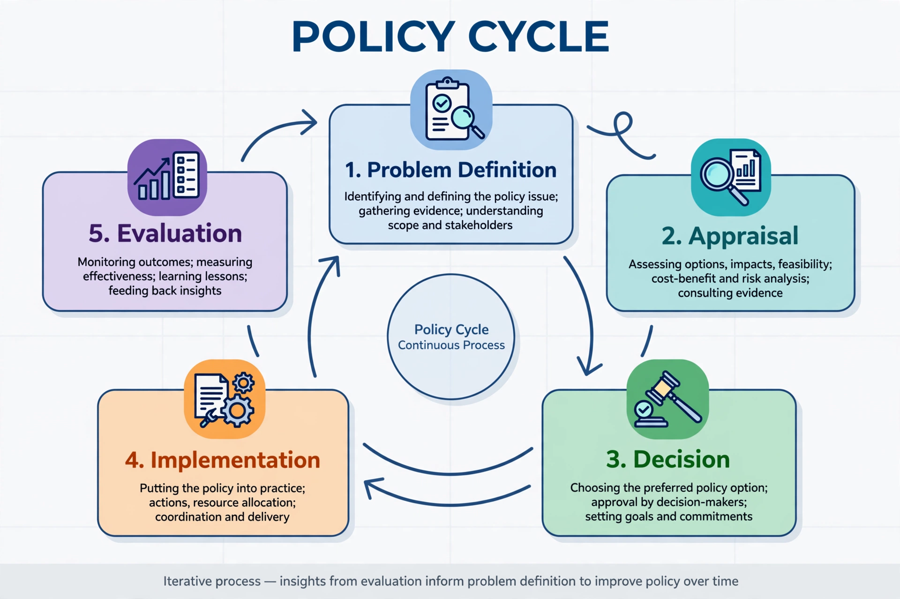

Policy analysis is a technique used in public administration and policymaking to examine and evaluate the available options for addressing a public problem. It is an applied, interdisciplinary field drawing on economics, statistics, political science, and operations research, and is practised by government analysts, think tanks, consultancies, and advocacy organisations.
A common framework divides analysis into stages: defining the problem, identifying alternative policies, predicting and evaluating the consequences of each (using tools such as cost–benefit analysis, cost-effectiveness analysis, and risk assessment), and recommending a course of action. Analysts distinguish descriptive approaches, which study how policy is actually made, from prescriptive approaches, which aim to improve decisions. Eugene Bardach's "eightfold path" is a widely taught prescriptive method.
Modern policy analysis grew out of wartime operations research and the systems-analysis methods applied at the RAND Corporation and, from 1961, across the US federal government under Robert McNamara's Planning, Programming, and Budgeting System. Professional schools of public policy expanded from the late 1960s, institutionalising the analyst's role.
Critics note that analysis cannot eliminate political conflict, since disputes often concern values rather than facts; that quantification can create false precision; and that analysts' assumptions may embed ideological preferences. Others emphasise that structured analysis improves transparency and helps decision-makers understand trade-offs even where it cannot dictate choices.
See also: Public policy · Cost–benefit analysis · Policy cycle